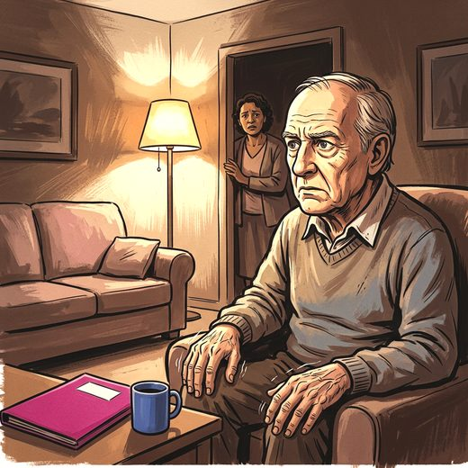

Consulta rápida à beira do leito
Condutas, doses e interações.
Referências da aula · 11
- Livingston G, Huntley J, Liu KY, et al. Dementia prevention, intervention, and care: 2024 report of the Lancet standing Commission. Lancet. 2024;404(10452):572-628.
- 2023 American Geriatrics Society Beers Criteria® Update Expert Panel. American Geriatrics Society 2023 updated AGS Beers Criteria® for potentially inappropriate medication use in older adults. J Am Geriatr Soc. 2023;71(7):2052-81. PMID 37139824. doi:10.1111/jgs.18372.PubMedDOI
- Seppi K, Ray Chaudhuri K, Coelho M, Fox SH, Katzenschlager R, Perez Lloret S, et al. Update on treatments for nonmotor symptoms of Parkinson's disease: an evidence-based medicine review. Mov Disord. 2019;34(2):180-98. PMID 30653247. doi:10.1002/mds.27602.PubMedDOI
- Cummings J, Isaacson S, Mills R, Williams H, Chi-Burris K, Corbett A, et al. Pimavanserin for patients with Parkinson's disease psychosis: a randomised, placebo-controlled phase 3 trial. Lancet. 2014;383(9916):533-40. PMID 24183563. doi:10.1016/S0140-6736(13)62106-6.PubMedDOI
- Grossberg GT, Kohegyi E, Mergel V, Josiassen MK, Meulien D, Hobart M, et al. Efficacy and safety of brexpiprazole for the treatment of agitation in Alzheimer's dementia: two 12-week, randomized, double-blind, placebo-controlled trials. Am J Geriatr Psychiatry. 2020;28(4):383-400. PMID 31708380. doi:10.1016/j.jagp.2019.09.009.PubMedDOI
- Tariot PN, Cummings JL, Soto-Martin ME, Ballard C, Erten-Lyons D, Sultzer DL, et al. Trial of pimavanserin in dementia-related psychosis. N Engl J Med. 2021;385(4):309-19. PMID 34289275. doi:10.1056/NEJMoa2034634.PubMedDOI
- Lenze EJ, Mulsant BH, Blumberger DM, Karp JF, Newcomer JW, Anderson SJ, et al. Efficacy, safety, and tolerability of augmentation pharmacotherapy with aripiprazole for treatment-resistant depression in late life: a randomised, double-blind, placebo-controlled trial. Lancet. 2015;386(10011):2404-12. PMID 26423182. doi:10.1016/S0140-6736(15)00308-6.PubMedDOI
- Parkinson Study Group. Low-dose clozapine for the treatment of drug-induced psychosis in Parkinson's disease. N Engl J Med. 1999;340(10):757-63. PMID 10072410. doi:10.1056/NEJM199903113401003.PubMedDOI
- The French Clozapine Parkinson Study Group. Clozapine in drug-induced psychosis in Parkinson's disease. Lancet. 1999;353(9169):2041-2. PMID 10376627.PubMed
- McKeith IG, Boeve BF, Dickson DW, Halliday G, Taylor JP, Weintraub D, et al. Diagnosis and management of dementia with Lewy bodies: fourth consensus report of the DLB Consortium. Neurology. 2017;89(1):88-100. PMID 28592453. doi:10.1212/WNL.0000000000004058.PubMedDOI
- Stahl SM. Stahl's essential psychopharmacology: neuroscientific basis and practical applications. 5th ed. Cambridge: Cambridge University Press; 2021.
Documentos oficiais
Leis e publicações do Ministério da Saúde sobre o cuidado da pessoa idosa, de acesso livre.
Abrir os documentos